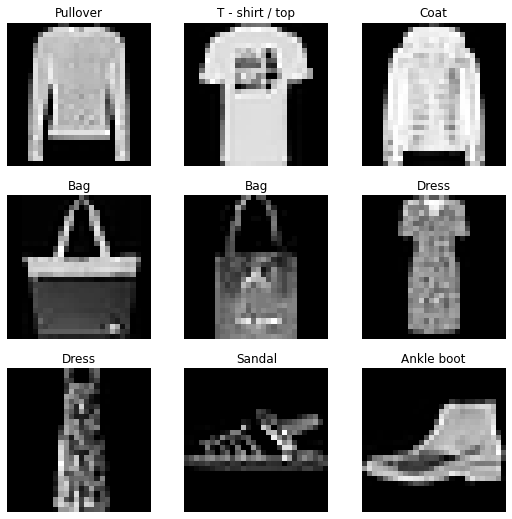

torch.set_printoptions(precision=2, linewidth=140, sci_mode=False)
mpl.rcParams['image.cmap'] = 'gray'
logging.disable(logging.WARNING)
set_seed(42)dataloaders
Bundle trn/val/test datasets together, and add helpful functionality for viewing data
get_dataloaders
get_dataloaders (train_dataset, valid_dataset, batch_size, shuffle:Optional[bool]=None, sampler:Union[torch.utils.d ata.sampler.Sampler,Iterable,NoneType]=None, batch_sampl er:Union[torch.utils.data.sampler.Sampler[Sequence],Iter able[Sequence],NoneType]=None, num_workers:int=0, collate_fn:Optional[Callable[[List[~T]],Any]]=None, pin_memory:bool=False, drop_last:bool=False, timeout:float=0, worker_init_fn:Optional[Callable[[int],NoneType]]=None, multiprocessing_context=None, generator=None, prefetch_factor:int=2, persistent_workers:bool=False, pin_memory_device:str='')
collate_dataset_dict
collate_dataset_dict (dataset)
DataLoaders
DataLoaders (train, valid, n_inp=1)
Initialize self. See help(type(self)) for accurate signature.
sample_dataset_dict
sample_dataset_dict (dataset, sample_sizes=(500, 500))
xmean,xstd = 0.28, 0.35
@inplace
def transformi(b): b['image'] = [(TF.to_tensor(o)-xmean)/xstd for o in b['image']]
_dataset = load_dataset('fashion_mnist').with_transform(transformi)
_dataset = sample_dataset_dict(_dataset)
dls = DataLoaders.from_dataset_dict(_dataset, 64, num_workers=4)100%|██████████| 2/2 [00:00<00:00, 364.98it/s]_dataset['train']Dataset({
features: ['image', 'label'],
num_rows: 500
})dls.train.datasetDataset({
features: ['image', 'label'],
num_rows: 500
})dls.show_batch()